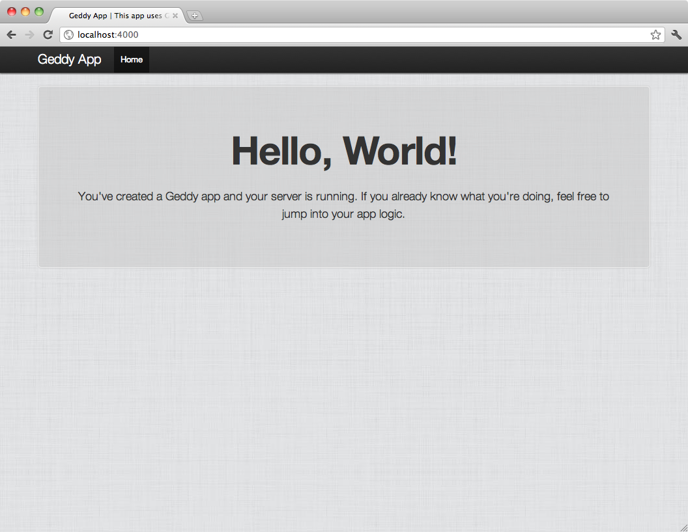
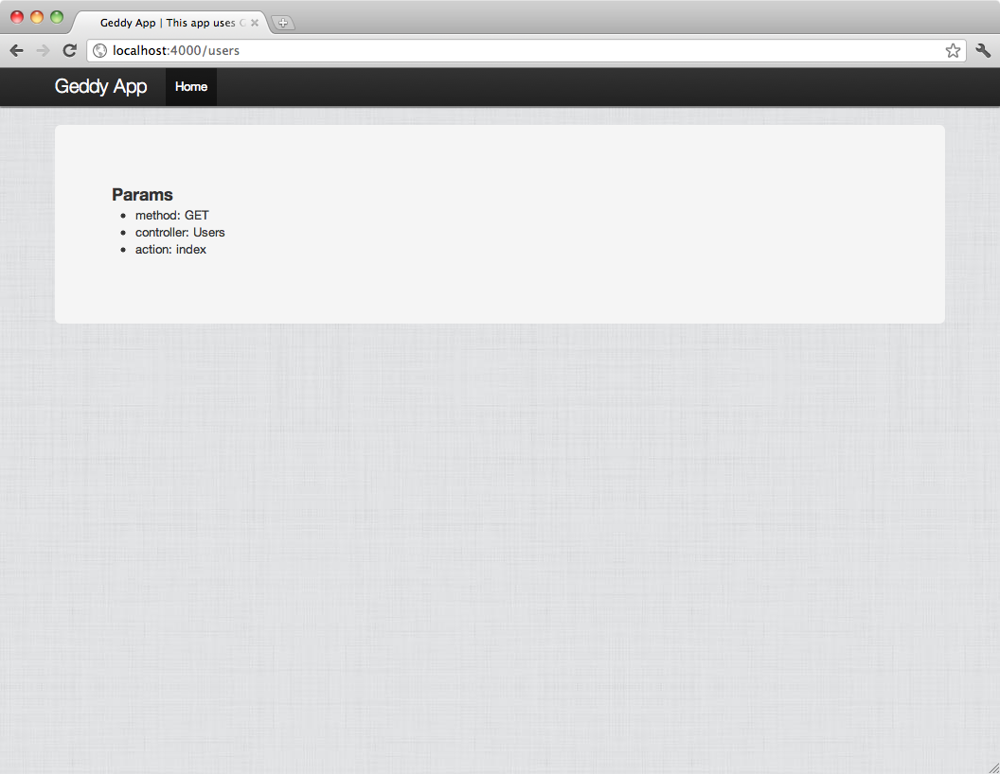

Your browser doesn't support this presentation. Try Chrome or Safari.
GeddyJS
A better web framework for Node.
My name is
Daniel Erickson
I work at Yammer as a Senior Javascript Engineer
I work with Node almost every day
We built our upload service on Node
We built our real time document collaboration service on Node
So lets talk about Node
Node is good at helping you create highly scalable prototypes without a whole lot of effort
Node has a great module system
Once you get past the prototype stage, though, your code starts looking like spaghetti
Frameworks help you get rid of spaghetti
So lets talk about frameworks
When you work on a team, frameworks help your code base stay consistent
When you have a lot of dependencies, frameworks help you keep them all in order
When you want to implement a new feature, frameworks help you write it faster
Web frameworks have been around for a while now
So lets talk about what's out there now
Ruby has Rails:
- Rails is monolithic
- convention over configuration
Python has Django:
- Django is modularized
- convention with configuration
Then Merb came around:
- Merb was modularized
- gave you convention without making it hard to configure
but the Rails guys ate it
How about web frameworks for Node?
Connect came first(ish)
Connect simplified the request and response cycle
Connect gave you middleware
Connect also gave you problems
Connect buffers requests
Connect buffers some responses
Connect has no structure
Then Express came around
Express was built on top of Connect
Express gives you a real framework
Express gives you better routes
Express gives you almost no structure
Express doesn't give you models
Express gives you all the problems Connect has
Flatiron has a different approach
Flatiron is a collection of modules that resemble a framework
Flatiron is pretty awesome but...
Flatiron has no structure
This lack of structure is why we built Geddy.js
Geddy.js is written by a few of us at Yammer:
But first some Yammer and Geddy history
Summer 2010: disappointed with the current options, Matt decides he wants to build his own web framework, Geddy v1
Winter 2010 - 2011: Yammer sets out to create an upload server that could handle the load of 3+ million users.
Early Spring 2011: The upload service launches with html5 document conversion, video transcoding, and image resizing.
Spring 2011: We continue to build out framework-like features onto the upload service
- process rotation
- a functional router
- controller structure
Fall 2011: A major refactor of Geddy is started- we merge the features that we developed for the upload service into geddy, and end up removing a lot of code in the process.
Winter 2011-2012: The upload service is ported to use the new framework that we came up with - we call it Geddy v2
Geddy v1 was a framework without an app
The upload service was an app without a framework
Geddy v2 is a framework built to make building apps easier
Geddy Features
Geddy has generators
$> geddy app your_app
$> geddy resource user
Geddy has routes
router.match('/').to(
{controller: 'Main', action: 'index'});
router.match('/moving/pictures/:id').to(
{controller: 'Moving', action: 'pictures'});
Geddy has resources
router.resource('users');
Geddy has content negotiation
/users/:id
/users/:id.json
/users/:id.js?callback=jsonp
Geddy has models
- Validation
- Data Types
- Instance Methods
- Static Methods
Geddy has Bootstrap and jQuery
- Front end structure
- Mobile and tablet ready
- Style and typography
- Javascript components
Geddy has EJS templates
<% if (localVar) { %> <%=localVar%> <% } %>
Geddy has logging
geddy.log.info('Some info for you');
geddy.log.warning('A warning!');
geddy.log.error('An error occurred');
Geddy has Metrics
$> npm install metrics
Geddy has buffered streams
- Allows for before filters
- Allows you to stream file uploads
Geddy has process clustering
- Use all the cores in your server
- Spread the load across your machine
What does a Geddy app look like?
First, lets generate a Geddy app:
$> geddy app test_app
Geddy app directory structure:
/app
/app/controllers
/app/models
/app/views
/app/views/layouts
/app/views/main
/config
/public
Geddy controller structure:
/app/controllers
/app/controllers/application.js
/app/controllers/main.js
Geddy views structure:
/app/views
/app/views/layouts
/app/views/layouts/application.html.ejs
/app/views/main
/app/views/main/index.html.ejs
Geddy models structure:
/app/models
- Open ended right now
- Instance Methods
- Static Methods
How do you start a Geddy app server?
$> cd test_app
$> geddy
Your Geddy app is now running at:

Lets generate a Geddy resource:
$> geddy resource user
What did that just do?
[ADDED] /app/models/user.js
[ADDED] /app/controllers/users.js
users resource route added to /config/router.js
Created resource view templates.
Now you've got these routes available
(GET) /users
(GET) /users/add
(GET) /users/:id
(GET) /users/:id/edit
(POST) /users
(PUT) /users/:id
(DELETE) /users/:id

Lets Recap
Node is great for rapidly prototyping services and apps
Rapid prototyping without a framework results in spaghetti code
Current Node frameworks don't give you enough structure to allow for team work, feature building, and consistency
Geddy does.
So use it:
$> npm install -g jake geddy
- Fork it on github at http://github.com/mde/geddy
- Learn Geddy at http://geddyjs.org
Thanks!
Any Questions?